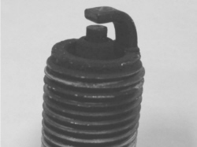
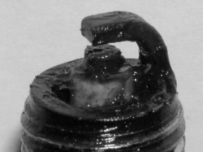
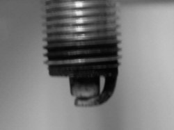
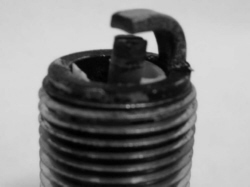
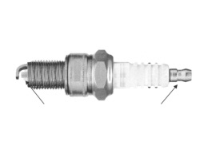

5510DA SPARK PLUG STATE CHECK
- Path
- Test > 55 ELECTRICAL EQUIPMENT > 5510 ENGINE IGNITION > 5510D SPARK PLUGS AND LEADS > 5510DA SPARK PLUG STATE CHECK
- Kind
- test / check procedure
- Applies to
- engines: 2.2 JTS; all production periods
- Interactive page
- https://sloeber94.github.io/elrnDB-aBrrSpdr/en/#/946001079
Applies to: engines: 2.2 JTS; all production periods
CHECK TO BE PERFORMED | RESOLUTION IF THE CHECK IS NOT OK | |
|---|---|---|
1 | Disconnect the high tension lead from the individual spark plugs and check that there is no microwelding at the terminal of the actual spark plugs | Replace the damaged spark plugs |
2 | Remove the spark plugs from the engine head and check that there are no signs of fouling like those illustrated in the diagrams below | Move on to Step 6 |


CHECK TO BE PERFORMED | RESOLUTION IF THE CHECK IS NOT OK | |
|---|---|---|
3 | Check that the spark plug earth electrodes are not bent or out of alignment as illustrated below | Move on to Step 6 |

CHECK TO BE PERFORMED | RESOLUTION IF THE CHECK IS NOT OK | |
|---|---|---|
4 | Check that the spark plug ceramic insulator nozzle is not damaged as illustrated below | Move on to Step 6 |

CHECK TO BE PERFORMED | RESOLUTION IF THE CHECK IS NOT OK | |
|---|---|---|
5 | Using a tester, check that the resistance between the connection terminal and the centre electrode (shown in the diagram below) for each spark plug is between 2 and 50 kOhm. The test is over | Replace the spark plugs outside the range |

CHECK TO BE PERFORMED | RESOLUTION IF THE CHECK IS NOT OK | |
|---|---|---|
6 | Connect the diagnostic equipment and check that error P0300 is present together with at least one other error out of P0301, P0302, P0303, P0304 | Replace the set of spark plugs |
7 | Replace the spark plugs in the cylinders where the error was detected (e.g. for P0301 the spark plug for cylinder 1) |
Topics linked from this page (1)
Topics that link to this page (8)
- B010 ENGINE DOES NOT START (UNDER ANY CIRCUMSTANCES)
- B013 ENGINE STARTS WITH DIFFICULTY
- D001 ENGINE NOT RUNNING SMOOTHLY / (HESISTANT)
- D002 ENGINE NOT RUNNING SMOOTHLY / (LOSING POWER)
- D003 ENGINE NOT RUNNING SMOOTHLY / (IRREGULAR OPERATION)
- D005 ENGINE DOES NOT PRODUCE BEST PERFORMANCE
- D010 ENGINE IDLE IRREGULAR
- X001 EXCESSIVE FUEL CONSUMPTION